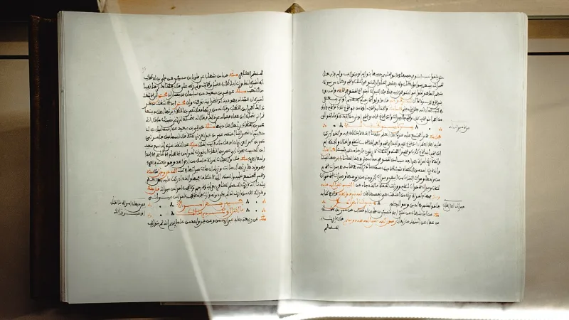
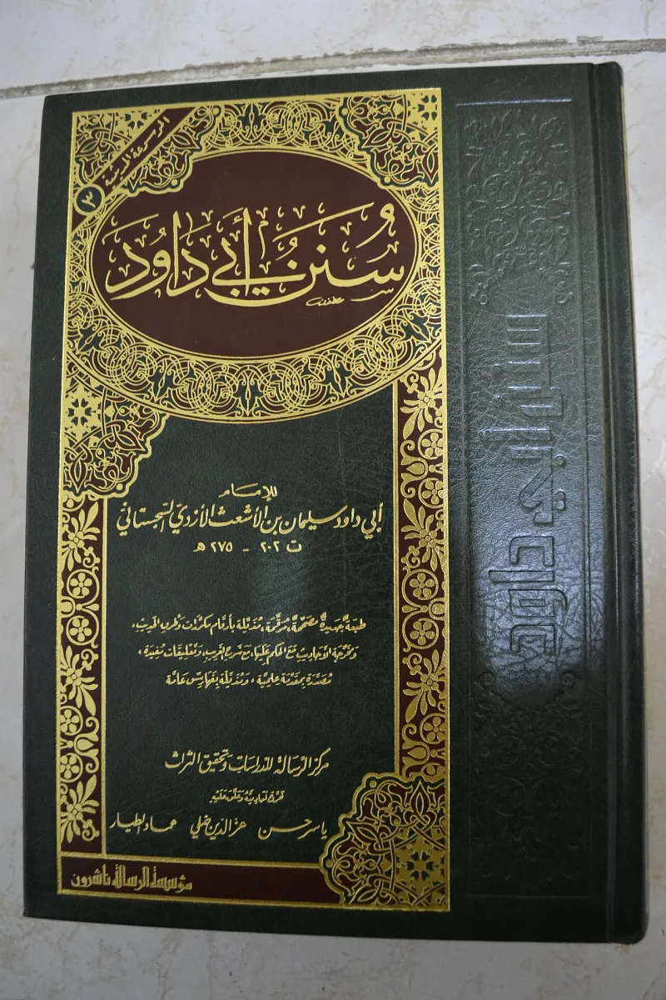

The facts sit in Islam's own trusted sources. You can make this point from their books alone.
Quran 4:34 gives three steps for a wife whose rebellion is feared. Admonish her, then leave her bed, then strike her.
The verb is daraba. Most translators render it beat or strike, and classical commentary understood physical hitting, though not severe.
Quran 4:24 permits relations with married women taken captive, their earlier marriages ended by capture.
Sunan Abi Dawud 2146 shows the whole trajectory. First: "Do not beat Allah's handmaidens." Then permission, after Umar complained.
Then, when women complained, "those men are not the best of you." Sahih Muslim 1438 records companions on the Banu Mustaliq raid asking about withdrawal with newly captured women. The objection recorded is about thwarting what is decreed, not about the act.
IslamQA 20802 and classical law give a real answer. On 4:34, the permission is a last resort and symbolic.
Jurists forbade injury, bruising and striking the face. Muhammad never hit a wife or servant (Sahih Muslim 2328) and said the best of you are best to their wives.
Some modern scholars read daraba as separate from. Ayesha Chaudhry's Oxford study traces this whole debate.
On captives, Jonathan Brown notes that concubinage was the universal law of war, including in Numbers 31:18 and Deuteronomy 21:10-14. Islam regulated it and pointed toward release.
Both permissions are conceded by Islamic law itself. No classical authority denied that 4:34 allows some striking; they argued about degree.
Access to captives is affirmed by 4:24, by Sahih Muslim 1438, and by mainstream fatwa today. The reading of daraba as separate from is rejected by nearly all classical and most modern scholars.
They admit the texts, and this is heavy ground. Face Deuteronomy 21 honestly rather than dodging it.
The Christian question is about status. These are not offered as concessions to a hard age.
They are final and permanent law, and are defended as such now. Never use this to shame a person.
Ask, listen, and go slowly.
"How do you and your teachers read Quran 4:34? I would rather hear it from you than assume."


They say the verse limits violence, and the Bible has the same war law.
IslamQA 20802, classical fiqh — Islamic law — and Jonathan Brown's Slavery and Islam give the answer. On 4:34, the permission is a last resort, and token. The old jurists forbade injury, bruising, or a blow to the face. The Prophet never hit a wife or a servant (Sahih Muslim 2328). He said the best of you are best to their wives. Some modern scholars read daraba as separate from. Ayesha Chaudhry's Oxford study traces that whole debate. The three steps cool things down in a world where unchecked beating was normal. So the verse limits violence rather than allowing it.
On captives, taking a captive to bed was the war law of every ancient people, the Bible included (Numbers 31:18; Deuteronomy 21:10-14). Islam set rules on it. There was a waiting time before intercourse. Splitting a captive from her children was banned. Freeing a captive and marrying her was praised. It moved captives into homes rather than to slaughter, on a path toward ending the practice.
Heavy ground: the texts are granted, so go slowly and never shame.
Both permissions are granted, in the text and in the law. No classical authority denied that 4:34 allows some physical striking. The dispute is over degree. Sexual access to captives is affirmed by the setting of 4:24, by Sahih Muslim 1438, and by mainstream fatwa. IslamQA states it plainly today.
The steelman about a path of restriction is a serious one. And the comparison with Deuteronomy 21 must be faced, not dodged.
But the Christian critique lands on the model claim. These are not offered as concessions to a hard age. They are the final revelation's lasting law, and living mainstream scholars defend them as such. The reading of daraba as separate from is rejected by nearly all classical and most modern scholars.